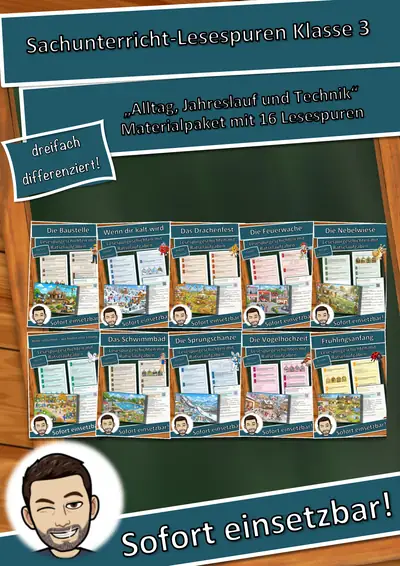
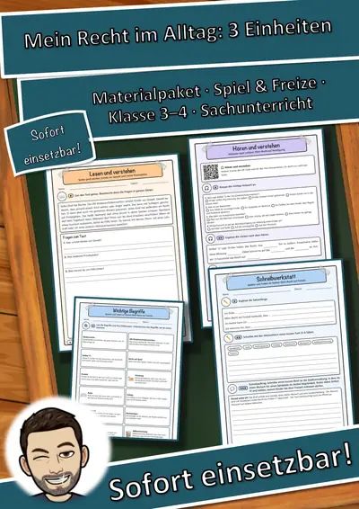
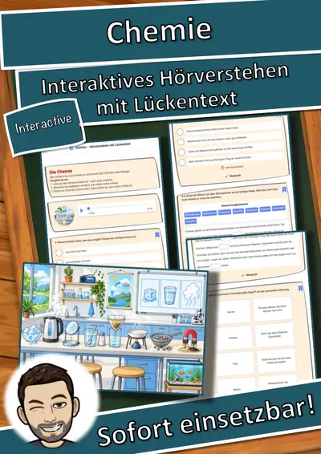

Materialpaket Lesespurgeschichten Chemie Klasse 8 – Chemie in Betrieb und Alltag: 13 Lesespuren mit Rätselaufgaben, dreifach differenziert
13 Lesespuren für die 8. Klasse – im Paket günstiger als einzeln
Mit diesem Materialpaket bekommst du 13 meiner Lesespurgeschichten für die 8. Klasse aus dem Fach Chemie zum Themenbereich „Chemie in Betrieb und Alltag“ in einem Download. Alle Lesespuren sind sofort einsetzbar, dreifach differenziert (leicht ★ / mittel ★★ / schwer ★★★) und jeweils in Farbe und Schwarz-Weiß enthalten. So arbeitet deine ganze Klasse am selben Thema, und jedes Kind liest auf seinem Niveau.
Preisvorteil: Einzeln gekauft kosten die 13 Materialien regulär zusammen 51,87 €. Im Paket zahlst du nur 25,93 € und sparst damit rund 50 %.Die 13 Materialien im Paket
Die Färberei (Klasse 8 – Chemie): Lesespurgeschichte „Die Färberei" – wie ein weißer Stoff dauerhaft eingefärbt wird und warum die Farbe nach dem Waschen nicht wieder herausgeht.
Die Glashütte (Klasse 8 – Chemie): Die Glasmacherin Frau Klar führt Mia und Tom Schritt für Schritt durch die Produktionslinie einer Glashütte.
Die Gärung (Klasse 8 – Chemie): Kellermeisterin Frau Kelter führt Mia und Tom Schritt für Schritt durch eine Mosterei – von der Obstpresse über Messglas, Hefetank, Gärfass, Gärspund und Thermometer bis zum Krautfass und ins Flaschenlager.
Die Kaffeerösterei (Klasse 8 – Chemie): Die Lernenden lesen einen Abschnitt, entnehmen dem Hinweis eine Station, suchen sie auf dem farbigen Rösterei-Plan (einer anschaulichen Prozess-Illustration) und lesen dort weiter.
Die Konservenfabrik (Klasse 8 – Chemie): Lesespurgeschichte „Die Konservenfabrik" – wie frisches Gemüse in der Dose viele Monate genießbar bleibt, ganz ohne Kühlschrank.
Die Molkerei (Klasse 8 – Chemie): Lena und Jonas erkunden mit der Lebensmitteltechnikerin Frau Weiß eine Molkerei.
Ostereier natürlich färben – Farbstoffe und Indikatoren (Klasse 8 – Chemie): Die passende Lesespur für Chemie in Klasse 8 (auch 7 und 9) – ideal vor Ostern zu Farbstoffen, Säuren und Basen und Indikatoren, für Stationenlernen oder Vertretungsstunden.
Die Papierfabrik (Klasse 8 – Chemie): Die Papiermacherin Frau Blatt führt Mia und Tom Schritt für Schritt durch die Produktionslinie einer Papierfabrik.
Die Saline (Klasse 8 – Chemie): Lena und Jonas erkunden mit der Salinen-Meisterin Frau Weiß ein altes Salzwerk.
Die Schokoladenfabrik (Klasse 8 – Chemie): Die Lebensmitteltechnikerin Frau Kern führt durch die Halle.
Die Seifensiederei (Klasse 8 – Chemie): Lena und Jonas erkunden mit der Seifensiederin Frau Seifert eine alte Werkstatt.
Die Zuckerfabrik (Klasse 8 – Chemie): Lena und Jonas erkunden mit der Technikerin Frau Klar eine Zuckerfabrik.
Die Ölmühle (Klasse 8 – Chemie): Die Lernenden lesen einen Abschnitt, entnehmen dem Hinweis eine Station, suchen sie auf dem farbigen Mühlen-Plan (einer anschaulichen Prozess-Illustration) und lesen dort weiter.
Lehrplanbezug (LehrplanPLUS Bayern, Mittelschule, Jahrgangsstufe 8)Deutsch – Lesen, mit Texten und weiteren Medien umgehen: Die Kinder lesen sinnentnehmend, wenden Lesestrategien an und entnehmen gezielt Informationen, denn nur wer genau liest, findet die nächste Station.
Deutsch – Sprechen und Zuhören: Das Hörverstehen per QR-Code schult konzentriertes Zuhören; Gespräche über Bräuche und Sachthemen fördern das Erzählen und Begründen.
Deutsch – Schreiben: Die Kinder beantworten Fragen schriftlich, füllen Steckbriefe aus und notieren Lösungen.
Chemie: Die Färberei, Die Glashütte, Die Gärung, Die Kaffeerösterei, Die Konservenfabrik, Die Molkerei, Ostereier natürlich färben – Farbstoffe und Indikatoren, Die Papierfabrik, Die Saline, Die Schokoladenfabrik, Die Seifensiederei, Die Zuckerfabrik, Die ÖlmühleSo funktioniert eine Lesespur
Die Kinder lesen ab START einen kurzen Abschnitt. Am Ende verrät ein Hinweis den nächsten Ort, den sie auf dem farbigen Plan suchen. Dort lesen sie weiter. An jeder richtigen Station sammeln sie einen Buchstaben, und eingeplante Sackgassen dienen der Selbstkontrolle. Am Ende ergeben die umgestellten Buchstaben ein geheimes Lösungswort.
Das ist in jeder Lesespur enthalten
Lesespurgeschichte in 3 Niveaus (leicht ★, mittel ★★, schwer ★★★)farbiger Plan als Suchkarte
Rätselaufgaben auf dem Weg, z. B. Zuordnen, Quiz, Rechenaufgabe und Steckbrief
Hörverstehen mit QR-Code zum Hörtext
Rätselseite mit Wörter-Suchsel und Wissensfragen
Ausmalbild zum Themaausführliches Lösungsblatt für die Lehrkraftalles zusätzlich als drucksparende Schwarz-Weiß-Variante
Einsatzmöglichkeiten
Alle Materialien passen das ganze Schuljahr über, auch als Thema der Woche oder Werkstatt. Du kannst sie im Stationenlernen, in Freiarbeit und Wochenplan, in der Leseförderung und in Förderstunden einsetzen. In Vertretungsstunden funktionieren sie ohne Vorbereitung. Sie eignen sich für alle Schulen in allen Bundesländern.
Viel Freude mit deiner Klasse wünscht dir Snice!
Ähnliche Materialien

Materialpaket Lesespurgeschichten Chemie Klasse 8 – Stoffe, Feuer und Arbeiten im Labor: 18 Lesespuren mit Rätselaufgaben, dreifach differenziert

Materialpaket Lesespurgeschichten Sachunterricht Klasse 4 – Handwerk, Betriebe und Technik: 22 Lesespuren mit Rätselaufgaben, dreifach differenziert

Materialpaket Lesespurgeschichten Sachunterricht Klasse 3 – Alltag, Jahreslauf und Technik: 16 Lesespuren mit Rätselaufgaben, dreifach differenziert

Mein Recht im Alltag Materialpaket: 3 Einheiten – Alltag den Kinderrechten zuordnen und selbst reflektieren (Grundschule

Chemie Lückentext mit Wortspeicher Hörverstehen und Suchsel

Materialpaket Winter und Advent für die 8. Klasse: 10 Lesespurgeschichten mit Rätselaufgaben fächerübergreifend (Polarlichter, Streusalz, Krippenbau & mehr)

Chemie – Hörverstehen mit Lückentext (interaktiv)